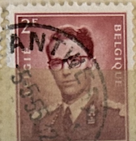
| SOURCE | TITLE| IMAGE MATCH | click to source page |
| HipStamp | Belgium 454: 2.50f King Baudouin, used, F-VF | Europe - Belgium & Colonies, General Issue Stamp / HipStamp |  |
| eBay UK | Belgium 1953 King Baudouin 2f Fine Used SG 1454 Herstal cancel VGC | eBay UK | 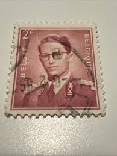 |
| eBay | Belgium - 1957/60 - COB 1072 - Scott 465 - Used - | eBay | 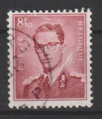 |
| eBay | Belgian Decimal Postage Stamps for sale | eBay | 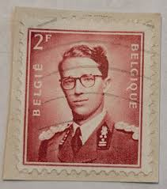 |
| eBay | 1953 Belgium - King Baudouin, "Marchand" - 2 Fr Stamp | eBay Australia | 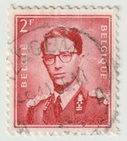 |
| eBay | 2 F 50 Belgium stamp - see scan | eBay | 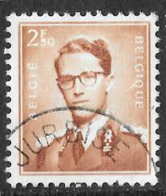 |
| Dreamstime.com | Belgium, 1953, Postage Stamp of King Baudouin from Belgium Editorial Image - Image of baudouin, sign: 250445290 | 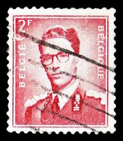 |
| Todocolección | belgica nº yvert 2351*** año 1990. 500 aniv.uni - Buy Antique stamps of Belgium on todocoleccion | 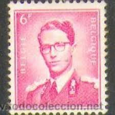 |
| Mercari | Belgium Stamp King Baudouin 2f Used 452 Wave | Mercari | 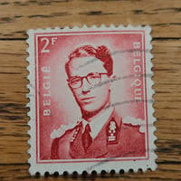 |
| HipStamp | Belgium 454: 2.50f King Baudouin, used, VF | Europe - Belgium & Colonies, General Issue Stamp / HipStamp |  |
| Dreamstime.com | Belgium, 1953, Postage Stamp of King Baudouin from Belgium Editorial Stock Image - Image of stamp, editorial: 250445294 | 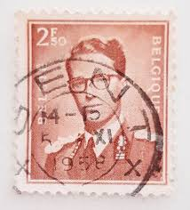 |
| HipStamp | Ozzy1 / HipStamp | 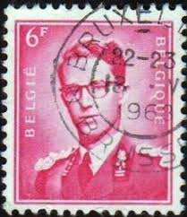 |
| World Stamps Project | Philately of Belgium: Varieties of Postage Stamps – World Stamps Project | 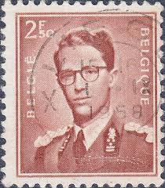 |
| HipStamp | Belgium 452: 2f King Baudouin, used, F-VF | Europe - Belgium & Colonies, General Issue Stamp / HipStamp | 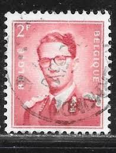 |
| eCRATER | Belgium Postage Stamp 1953 Scott# BE 452 Used 2 fr King Baudouin M | 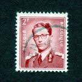 |
| Encyclopaedia Philatelica | Balduí: rei dels belgues (1951-1993) - Encyclopaedia Philatelica | 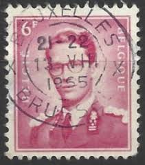 |
| Bob Shop | Belgium - 1953 BELGIUM KING BAUDOUIN for sale in Cape Town (ID:671367889) | 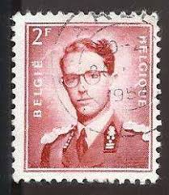 |
| Bob Shop | Belgium - Belgium - King Baudouin - Pairs, Trip and Blocks was listed for 150.00 on 1 Apr at 15:16 by Carole009 in Scottburgh (ID:637579147) | 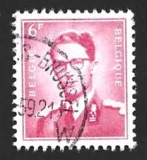 |
| eBay | Belgium - 1957 - King Baudouin - New values - 2.50 Fr - Used - #2 | eBay | 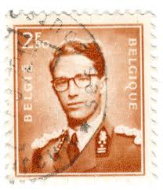 |
| HipStamp | Belgium 458: 4.50f King Baudouin, used, F-VF | Europe - Belgium & Colonies, General Issue Stamp / HipStamp |  |
| Alamy | Baudouin of Belgium (1930-1993), King of the Belgians during 1951-1993. Portrait on a Belgian postage stamp Stock Photo - Alamy | 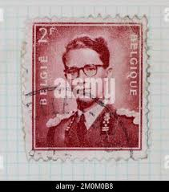 |
| Dreamstime.com | King Baudouin and Queen Fabiola Editorial Image - Image of stamp, kingdom: 95095115 |  |
| HipStamp | Belgium 1958 Sc#455, SG#1457 3f Magenta King Baudouin USED-H. | Europe - Belgium & Colonies, General Issue Stamp / HipStamp | 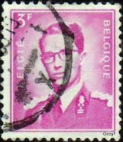 |
| HipStamp | Belgium 455: 3f King Baudouin, used, VF | Europe - Belgium & Colonies, General Issue Stamp / HipStamp | 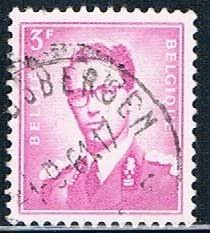 |
| Alamy | BELGIUM - CIRCA 1952: a stamp printed in the Belgium shows Count Lamoral II Claudius Franz of Thurn and Taxis, Imperial Postmaster, circa 1952 Stock Photo - Alamy | 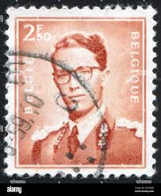 |
| fil-mag.be | Belgium 1959 n° 1072a postfris** brown lilac | 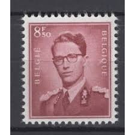 |
| mintindia.in | www.mintindia.in: www.mintindia.in:We have launched this website with primary objective to spread education about various coins of India and around the earth to help each numismatist, Introducing huge collections of the antique material | 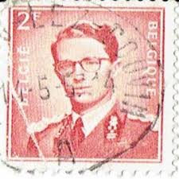 |
| Alamy | Belgium Postage Stamp - 1957 Stock Photo - Alamy | 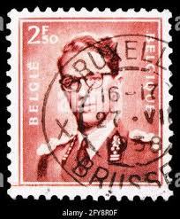 |
| Dreamstime.com | Set Vintage Postage Stamps Belgium Stock Photos - Free & Royalty-Free Stock Photos from Dreamstime | 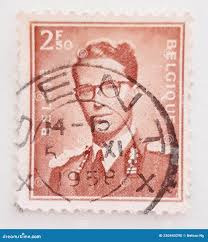 |
| Belgium (59) 1957 King Baudouin | 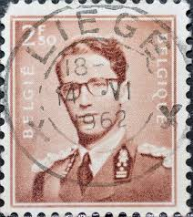 | |
| Alamy | BELGIUM - CIRCA 1993: a stamp printed in the Belgium shows Castle Cortewalle, Beveren, Belgium, circa 1993 Stock Photo - Alamy | 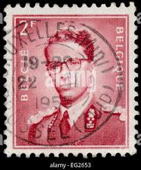 |
| Shutterstock | 3+ Thousand Dutch Post Stamp Royalty-Free Images, Stock Photos & Pictures | Shutterstock | 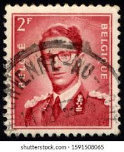 |
| Alamy | RUSSIA - CIRCA 1953: a stamp printed in the Russia shows Moscow University and Two Youths, circa 1953 Stock Photo - Alamy | 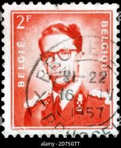 |
| Dreamstime.com | Belgium 2 F Old Stamp Collection Editorial Image - Image of communication, black: 328055175 | 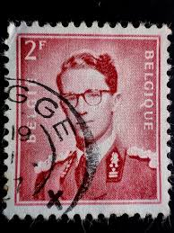 |
| Dreamstime.com | 10,607 Old King Portrait Stock Photos - Free & Royalty-Free Stock Photos from Dreamstime - Page 51 | 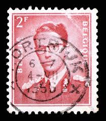 |
| Shutterstock | 1+ Thousand King Leopold Royalty-Free Images, Stock Photos & Pictures | Shutterstock | 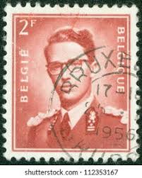 |
| Alamy | Baudouin of belgium hi-res stock photography and images - Alamy | 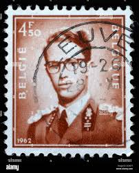 |
| eBay | Belgium - 1970 - King Baudouin - 2.50Fr - #2124 | eBay | 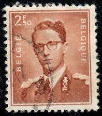 |
| eBay | Belgium Postage ~ Daily Postage 2 Francs ~ King Baudouin ~ Posted ~ c.1953 ~ 004 | eBay | 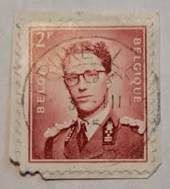 |
| eBay | Belgium Postage ~ Daily Postage 2 Francs ~ King Baudouin ~ Posted ~ c.1953 ~ N68 | eBay | 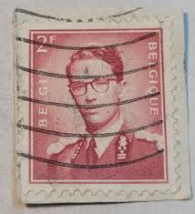 |
| Alamy | Postage stamp from Belgium in the King Baudouin series Stock Photo - Alamy | 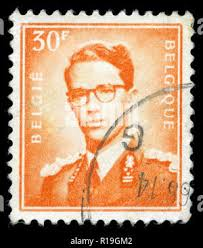 |
| eBay | Belgium - 1953 - King Baudouin, Marchand - 2Fr - #2121 | eBay | 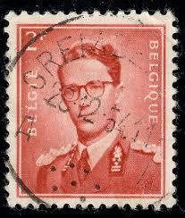 |
| eBay | Belgium #952 Mint Never Hinged - WDWPhilatelic (W3B) (4/25) | eBay | 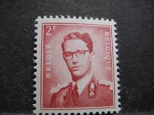 |
| eBay | Belgium - 1957 - King Baudouin - New value - 2.50Fr - #2127 | eBay | 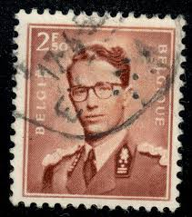 |
| eBay UK | Belgium 1953-1972 SG#1463, 6f King Boudouin Used #E85728 | eBay UK | 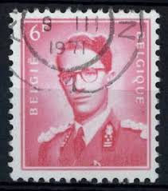 |
| allnumis.com | 6 Francs - King Baudouin, King Baudouin I - Belgium - Stamp - 51172 | 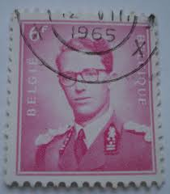 |
| eBay | Belgium - 1957, 1958, 1962 King Baudouin - New values | eBay | 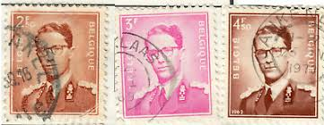 |
| eBay | Belgian Red Belgian & Colonies Stamps for sale | eBay | 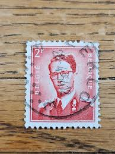 |
| eBay | Belgium - 1953 - King Baudouin, Marchand - 2Fr - #2122 | eBay | 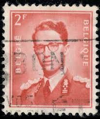 |
| eBay | Vintage- Belgium Stamp Belgie/Belique King Baudouin 3f - Red -rare | eBay | 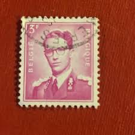 |
| eBay UK | Belgium 1953-1972 SG#1454, 2f King Boudouin Used #E85695 | eBay UK | 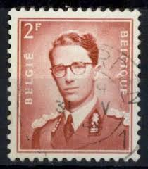 |
| eBay | Belgium 1954 YV Service 58+60 MLH VF | eBay | 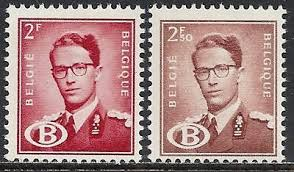 |
| Alamy | King baudouin type marchand hi-res stock photography and images - Alamy | 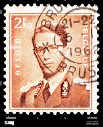 |
| Flickr | Belgium 2F Red Stamp | Year: 1956? | stompstompstamps | Flickr | |
| eBay | Belgium Sc O57 MNH. 1954 2f rose red King Baudouin definitive, fresh, bright | eBay | |
| HipStamp | Belgium 451: 1.50f King Baudouin, used, VF | Europe - Belgium & Colonies, General Issue Stamp / HipStamp | |
| eBay | Belgium Stamp King Baudouin 2F Used 452 1954 | eBay | |
| eBay | Belgium stamps - King Baudouin I (1930-1993) 2 Belgian franc 1953 Sg:BE 1454 | eBay | |
| eBay | BELGIUM 455ii - King Baudouin "1958 Bright Lilac" (pf30925) | eBay | |
| eBay | Set of 5 Belgium Stamps (Kings - Baudouin, Albert, Leopold II, Coat of Arms) | eBay |